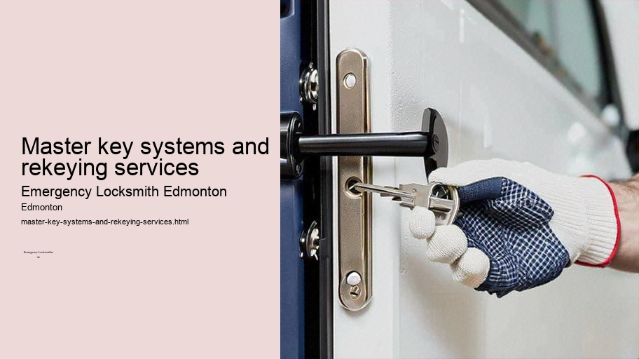

News
24/7 Emergency Locksmith Services
24/7 Emergency Locksmith Services
Emergency Locksmith Services
Residential lockout assistance
Automotive lockout services
Broken key extraction
Emergency lock repair and replacement
Commercial Locksmith Solutions in Edmonton
Commercial Locksmith Solutions in Edmonton
Highsecurity lock installations
Master key systems and rekeying services
Access control system integration
Panic bar installation and maintenance
Residential Locksmith Services in Edmonton
Residential Locksmith Services in Edmonton
Home lockout response
Rekeying existing locks for homes
Installation of new locks and deadbolts
Repairing or replacing residential locks
Automotive Locksmith Services in Edmonton
Automotive Locksmith Services in Edmonton
Car key duplication and replacement
Transponder key programming
Ignition repair and replacement services
Vehicle trunk opening
About Us

Master key systems and rekeying services
Keyless entry systems Edmonton
Master Key Systems and Rekeying Services: An Insight into Secure Access Management
Security is a fundamental concern for businesses, homeowners, and institutions alike. The need to control access to various rooms and facilities while maintaining convenience has led to the development of sophisticated locking mechanisms. Among these are master key systems and rekeying services, both of which serve critical roles in the realm of security management.
A master key system is ingeniously designed to allow multiple locks to be opened by individual keys, while also having one master key that can open all locks within the system.
Emergency door opening Edmonton
This hierarchical approach to key management offers a blend of accessibility and security that is particularly useful in environments such as office buildings, apartment complexes, hotels, schools, and government agencies.
The concept behind a master key system lies in its lock configuration.
Security lock upgrades Edmonton
Locksmith near me Edmonton
Locks within the system are set up so that each cylinder can be operated by two or more different keys.
Access control systems Edmonton
One key operates only one lock – this is known as the change key.
Lock change services Edmonton
Another key – the master key – operates all locks within a defined group. There may even be several levels of mastery; for example, sub-master keys that open all doors within a particular department of an office building but not others outside it.
Keyless entry systems Edmonton
Such systems offer considerable benefits.
Commercial locksmith Edmonton
They reduce the number of keys an individual needs to carry; a facility manager or maintenance worker with a master key can access any room without needing an unwieldy bunch of keys. It also simplifies issues like granting temporary access because specific change keys can be provided without compromising overall security.
Installation of a master key system requires meticulous planning and precision from experienced locksmiths who will establish the hierarchy suitable for your organization's specific needs and ensure that security integrity is maintained throughout.
Rekeying services complement master key systems by providing an option for altering access without changing hardware entirely.
Garage door lock repair Edmonton
When employees leave or keys are lost, instead of replacing locks – which can be expensive and time-consuming – rekeying allows you to reset the lock so that old keys no longer work while new ones do.
This service involves changing the tumblers or pins inside a lock cylinder with new ones that correspond with a new set of keys. By doing so, one ensures that only authorized individuals have access moving forward. Rekeying not only improves security but also represents cost efficiency since it eliminates the need for purchasing new locksets.
Moreover, rekeying makes sense from an environmental standpoint as well; there’s less waste involved if you’re simply adjusting what’s already installed rather than throwing away entire mechanisms due to compromised security or owner changes.
Both master key systems and rekeying services require expert knowledge on part of professional locksmiths who understand complex locking mechanisms and how they relate to your specific needs for safety and functionality.
In conclusion, mastering secure access through these services is about striking balance—providing enough layers for protection yet retaining operational simplicity where needed.
Intercom system installation Edmonton
Whether it's managing entry points across sprawling corporate campuses or ensuring tenant safety in residential properties, leveraging these techniques helps create more streamlined processes around who gets in where—and when they do it—all while keeping unauthorized parties firmly out.
Access control system integration
Check our other pages :
Commercial Locksmith Solutions in Edmonton
Access control system integration
Ignition repair and replacement services
Installation of new locks and deadbolts
Repairing or replacing residential locks
Frequently Asked Questions
What is a master key system, and can an emergency locksmith in Edmonton install one for my property?
A master key system is a security solution that allows multiple locks to be opened by a single master key while also having individual keys for each lock. Yes, an emergency locksmith in Edmonton can assess your propertys needs and install a suitable master key system.
How quickly can an emergency locksmith in Edmonton respond to rekey my locks after a security breach?
Response times vary depending on the specific service provider, but many emergency locksmiths in Edmonton offer 24/7 services and aim to respond as quickly as possible, often within the hour or less.
Is it possible to rekey all types of locks with an emergency locksmith service in Edmonton?
While most standard residential and commercial locks can be rekeyed by an experienced emergency locksmith, some high-security or specialized locks may require specific services or replacement. Its best to consult with the locksmith about your particular lock type.
Will rekeying my locks by an emergency locksmith affect my existing warranties or insurance policies?
Rekeying should not affect warranties or insurance policies as long as its performed by a licensed and professional locksmith. However, it’s always wise to check the terms of your policies or contact your insurer for confirmation.
Can I have one key for all doors including both home and business through an emergency locksmith service in Edmonton?
Technically yes, if all the locks are compatible with the same type of key. An emergency locksmith can design a master key system that includes both your home and business premises; however, for security purposes, it’s generally advised to keep residential and commercial keys separate.